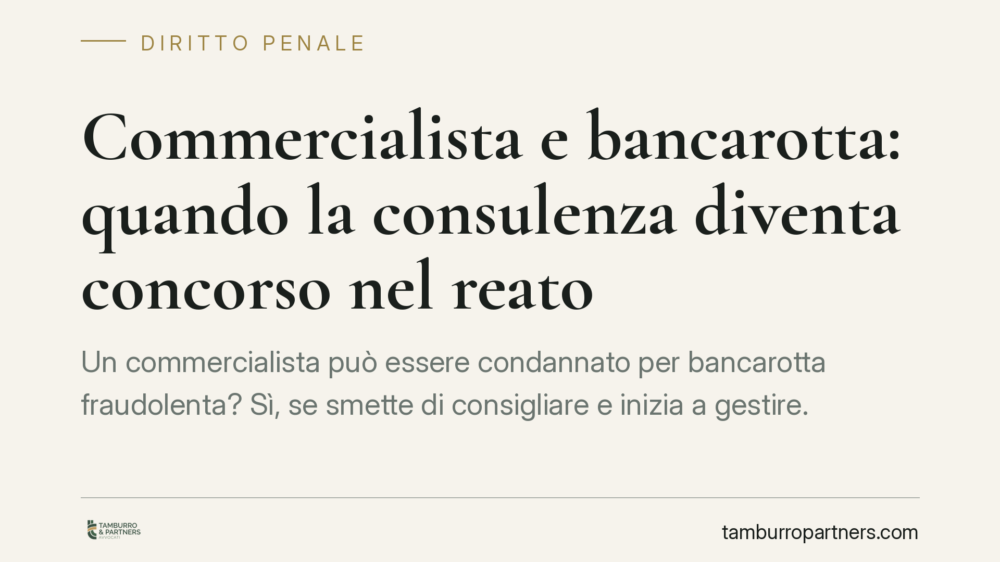

Commercialista e bancarotta: quando la consulenza diventa concorso nel reato
Un commercialista può essere condannato per bancarotta fraudolenta? Sì, se smette di consigliare e inizia a gestire. La Cassazione distingue la consulenza tecnica lecita dal concorso del professionista nel dissesto della società, quando questi opera sui conti compiendo pagamenti distrattivi. Il discrimine è il dolo, non la semplice negligenza professionale.

Il fatto
La Corte di Cassazione penale è tornata sul tema del coinvolgimento del commercialista nei reati fallimentari della società assistita. La vicenda riguarda un professionista che non si era limitato a fornire assistenza tecnica, ma operava direttamente e autonomamente sui conti sociali, eseguendo pagamenti idonei a sottrarre risorse alla garanzia dei creditori.
La conclusione: in presenza di una condotta attiva e consapevole, il commercialista può rispondere di concorso in bancarotta fraudolenta. Al contrario, la mera consulenza, anche se tecnicamente discutibile, non integra di per sé il reato.
*Nota redazionale: al momento della stesura, gli estremi completi della pronuncia (sezione e numero di deposito) non risultano verificabili in via definitiva. Il contributo richiama pertanto l'orientamento consolidato in materia, che la decisione segnalata conferma.*
Inquadramento normativo
La bancarotta fraudolenta patrimoniale è tuttora disciplinata dall'art. 216 del R.D. 267/1942 (Legge Fallimentare) per le procedure non soggette al nuovo Codice. Il Codice della crisi d'impresa e dell'insolvenza (D.Lgs. 14/2019) ha trasposto le fattispecie penali fallimentari negli articoli 322 e seguenti; tuttavia la corrispondenza puntuale con le vecchie figure va letta con cautela e verificata caso per caso.
È importante distinguere due piani temporali che spesso si confondono:
- Applicazione del CCII: il Codice della crisi si applica, in via generale, alle procedure aperte a partire dal 15 luglio 2022.
- Irretroattività penale: per la condotta incriminata vale comunque il principio di cui all'art. 2 cod. pen.: si applica la norma vigente al momento del fatto, salva l'applicazione della disposizione più favorevole.
Il commercialista non è, di regola, l'autore proprio del reato (che è l'imprenditore o l'amministratore). Può però rispondere come concorrente "extraneus" ai sensi dell'art. 110 cod. pen.: il soggetto esterno che contribuisce consapevolmente alla realizzazione del reato altrui. In alternativa, se la sua ingerenza è stabile e sostanziale, può essere qualificato amministratore di fatto ex art. 2639 cod. civ., norma che equipara a chi riveste la carica formale chi ne esercita in concreto i poteri gestori.
Implicazioni pratiche
Il punto decisivo è la linea di confine tra due attività.
La consulenza tecnica lecita consiste nel fornire pareri, redigere bilanci, suggerire soluzioni, anche di fronte a una crisi. Resta attività professionale protetta, anche quando il consiglio si rivela sbagliato: l'errore o la negligenza appartengono, semmai, alla responsabilità civile e disciplinare.
La gestione di fatto è altra cosa: operare sui conti, disporre pagamenti, decidere a chi corrispondere somme in presenza di dissesto. Qui il professionista non consiglia, agisce. E se agisce distraendo risorse dalla garanzia dei creditori, entra nel perimetro penale.
Il criterio che tiene insieme il quadro è il dolo. Per il concorso in bancarotta non basta la trascuratezza o l'imperizia: occorre la consapevolezza di contribuire a una condotta che impoverisce il patrimonio sociale a danno dei creditori. La mera negligenza professionale resta fuori dalla responsabilità penale.
Per il professionista il rischio concreto nasce quando la fiducia del cliente si traduce in deleghe operative informali: firme sui conti, accesso all'home banking, decisioni di pagamento prese in autonomia. Sono proprio questi elementi, nella prassi giudiziaria, a far scivolare la posizione dal consulente all'amministratore di fatto.
Cosa fare in concreto
- Verificate le deleghe di firma: non accettate poteri dispositivi sui conti sociali. L'operatività bancaria deve restare in capo all'imprenditore o all'amministratore.
- Formalizzate l'incarico per iscritto: la lettera d'incarico deve delimitare con precisione l'oggetto della prestazione, escludendo compiti gestori.
- Tracciate i pareri: conservate per iscritto le indicazioni fornite, soprattutto in situazioni di crisi, così da documentare il carattere consultivo dell'attività.
- Segnalate le criticità: di fronte a operazioni sospette o a segnali di insolvenza, mettete per iscritto le riserve e le raccomandazioni rivolte agli organi sociali.
- Distinguete i ruoli: in caso di contestazione penale, è opportuno un tempestivo supporto difensivo specializzato, poiché le qualificazioni iniziali della condotta incidono sull'intero procedimento.
---
*Contributo informativo a cura di Tamburro & Partners - Avv. Giuseppe Tamburro. Non costituisce parere legale.*
Ogni condominio ha una storia a sé.
Se gestisci un'amministrazione e vuoi un confronto su una specifica questione condominiale, scrivi allo studio. Ti rispondiamo entro un giorno lavorativo.